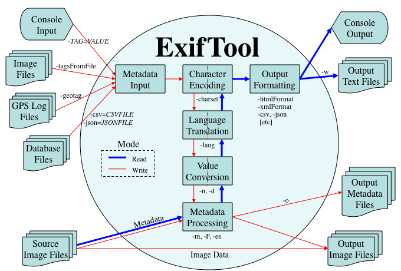

Ez az oldal az ExifTool belső működésének néhány részletét ismerteti.
Az alábbi ábra az exiftool alkalmazás információáramlását mutatja. Az ábrán a dobozokon kívül néhány, a feldolgozás különböző szakaszaihoz kapcsolódó parancssori opció szerepel. Ezek az opciók mind közvetlenül megfeleltethetők az API-n (Application Programming Interface) keresztül elérhető opcióknak vagy függvényhívásoknak, kivéve a kimeneti szöveg formázását, amelyet az alkalmazás szintjén kezel a program.

Az információáramlás két különálló módra oszlik: 1)
információ olvasása vagy kinyerése, és 2)
írás vagy szerkesztés. Az alkalmazás alapértelmezés
szerint olvasás módban fut, de írás módba vált,
ha bármely taghez új értéket rendelnek (a parancssorban a "-TAG=",
"-tagsFromFile", "-geotag", "-csv=" vagy
"-json=" révén).
Amikor az ExifTool egy tag értékét olvassa vagy írja, minden értékre 3 külön konverzió vonatkozik, így minden tag értékének 4 különböző szintje van. Alapértelmezés szerint a felhasználók csak az ember által olvasható ("PrintConv") értékkel érintkeznek, de a többi szint is elérhető különféle exiftool opciókon keresztül:
-lang
(Lang) opció adja meg ennek a konverziónak a nyelvét, a
-c és -d (CoordFormat és DateFormat) opciók pedig a
GPS-koordináták és a dátum/idő értékek formázását adják meg.-n opció használatakor,
egyes tagekhez pedig a tagnév # karakterrel való
utótagozásával.-v opcióval.-v3 opcióval, vagy a
-htmlDump szolgáltatással. Vegye figyelembe, hogy ez az érték
nincs kapcsolatban a -b (-binary) opcióval, amely
valójában a "ValueConv" értéket adja vissza, és olyan tagekhez használatos, ahol
ez az érték nem jeleníthető meg egyszerű szöveges formátumban. A
tagnév-dokumentáció
Writable oszlopa adja meg ennek a bináris adatnak a formátumát az írható
tagekhez.Az alábbiakban néhány példa látható ezekre a különböző értékekre néhány tag esetében:
Tag 3. PrintConv 2. ValueConv 1. Raw (Rational) 0. Binary EXIF:Orientation Horizontal (normal) 1 1 EXIF:GPSLatitude 45 deg 20' 11.00" 45.3363888888889 45 20 11
(45/1 20/1 11/1)
00 00 00 14 00 00 00 01
00 00 00 0b 00 00 00 01XMP:GPSLatitude 45 deg 20' 11.00" 45.3363888888889 45,20.183333N "45,20.183333N" EXIF:ExposureTime 1/30 0.03333333333 0.03333333333
(1/30)EXIF:ShutterSpeedValue 1/30 0.0333333334629176 4.90689059
(19868/4049)EXIF:ModifyDate (a -dopció állítja be)2016:11:25 11:56:39 2016:11:25 11:56:39 "2016:11:25 11:56:39\0" XMP:ModifyDate (a -dopció állítja be)2016:11:25 11:56:39.00-05:00 2016-11-25T11:56:39.00-05:00 "2016-11-25T11:56:39.00-05:00"
Önnek joga van tudni a képeiben található metainformációról. Az Exiftool projekt egyik fő célja, hogy ezt az információt szabadon elérhetővé tegye, mind a nagyközönség, mind más fejlesztők számára erőforrásként.
Az exiftool tervezése során számos mögöttes filozófia befolyásolta az általános fejlesztést:
Az ExifTool fejlesztésének kezdetén a Perl, a Python és a C++ is szóba került a projekt lehetséges nyelveként. Nyilvánvaló volt, hogy a projekt jelentős erőfeszítést igényel, és a nyelv megválasztása erősen befolyásolhatja a szükséges munka mennyiségét. A Python erős esélyes volt, de a C-szerű szintaxis iránti személyes preferencia miatt elesett. A Perl a C++-szal szemben főként azért lett a választás, mert kevesebb munka a projektet fejleszteni és karbantartani. Visszatekintve ez határozottan jó döntés volt, ráadásul további előnyt jelentett a Perl-szoftverek tesztelését és terjesztését támogató erős infrastruktúra.
A Perl 5 nagyon kiforrott és rendkívül stabil, így szinte semennyi idő nem megy el fordítási problémákkal. Hasonlítsuk ezt össze a C++-szal, ahol egy nagy projekt fejlesztési idejének jelentős része erre a területre mehet el. Emellett a Perl beépített reguláris kifejezései fantasztikusan hasznosak egy metainformáció-könyvtárhoz szükséges összes sztringkezeléshez. A Perl legnagyobb problémája, hogy nem támogatja a windowsos Unicode fájlneveket.
A lényeg az, hogy a fejlesztési idő nagy része a metainformáció mechanikájával telik, aminek eredményeként az ExifTool egy teljes értékű metainformáció-könyvtár. Egyetlen fő fejlesztővel (Phil Harvey) és 300 ezer sornyi kóddal (2025 decemberében) ez valódi teljesítmény.